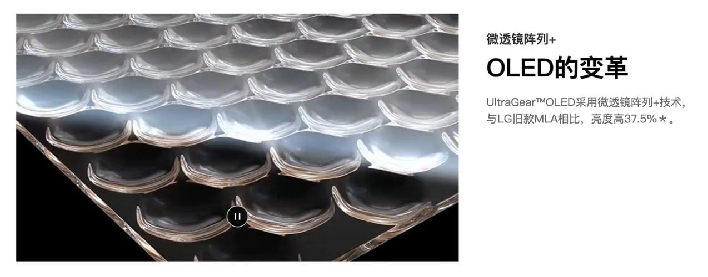

LG 27GR95QE

LG 27 英寸旗舰电竞 OLED 显示器，2K 分辨率配 240Hz 刷新率与 0.03ms 响应，原生 10bit 面板带来极致色彩与近乎无限对比度。HDR10 峰值亮度高，防眩光涂层实用，是追求极致响应速度与画质的电竞玩家的梦幻装备。
客观评测
27GR95QE 采用 27 英寸 2K WOLED 面板，240Hz 刷新率配合 0.03ms 响应，快速移动场景几乎无拖影，动态清晰度远超传统 IPS。OLED 自发光带来 150 万比 1 对比度，黑位与暗场表现顶级，实测 DCI-P3 色域约 98.5%。HDR 峰值约 1000 尼特，HDR10 观感出色。接口提供两个 HDMI 2.1 与 DP 1.4，支持 G-Sync 与 FreeSync。短板是全屏亮度约 200 尼特，需注意烧屏防护。
主观点评
用过它就回不去普通显示器了：黑是纯粹的黑，夜间场景的层次感让人起鸡皮疙瘩，FPS 游戏里甩枪完全不糊。240Hz 的顺滑配合 OLED 的瞬时响应，操作手感行云流水。防眩光涂层也做得不错，房间里开灯反光可控。不过它更适合游戏娱乐而非长时间文档办公，全屏亮度一般，价格也不便宜。如果你是画质与响应双修的玩家，它非常值得投资。
优点与不足
- OLED 面板响应仅 0.03ms，FPS 游戏几乎无拖影
- 原生 10bit 色彩与无限对比度，画面通透立体
- HDMI 2.1 双接口，次世代主机满血支持
- 全屏亮度偏低，明亮房间办公偏暗
- OLED 长期显示固定画面存在烧屏风险
- 价格较高
参数规格
| 尺寸 | 27 英寸（16:9） |
|---|---|
| 面板 | WOLED（LG Display） |
| 分辨率 | 2560×1440（2K） |
| 刷新率 | 240Hz |
| 响应时间 | 0.03ms GTG |
| 色域 | 约 98.5% DCI-P3 |
| 亮度 | 典型约 200 尼特，HDR 峰值约 1000 尼特 |
| HDR | HDR10，DisplayHDR True Black 400 |
| 对比度 | 1500000:1（OLED 像素自发光） |
| 接口 | HDMI 2.1×2、DP 1.4、USB 上行/下行 |
| 同步 | NVIDIA G-Sync Compatible、AMD FreeSync Premium |
| 支架 | 升降、俯仰、旋转，支持壁挂 100×100mm |
| 护眼 | 低蓝光、不闪屏、防眩光低反射涂层 |